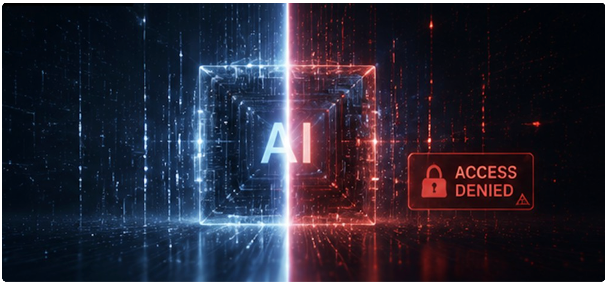

一、先把故事讲清楚：六月那两个周五
要理解今天的局面，得先把时间线摆出来。
下面每一个时间点都有公开报道支撑，我尽量只讲已经被多家媒体确认的部分，传闻和小道消息会单独标出。
6 月 9 日，Anthropic 发布 Claude Fable 5。这是它第一次把"Mythos 级"模型放给公众。在此之前，Anthropic 一直把 Mythos 这一档说成"太强、不适合公开发布"，尤其是在网络安全这件事上。Fable 5 的卖点，正是它在前代基础上加了一层安全护栏，号称既保留了顶级能力，又把高风险用法拦在外面。完整的、护栏更少的 Mythos 5，则只通过一个叫 Project Glasswing 的项目，给一小批经过审查的机构使用。
6 月 12 日，周五晚上，剧情急转。据 Axios、Fortune、Forbes、TIME 等多家媒体报道，美国商务部部长 Howard Lutnick 给 Anthropic CEO Dario Amodei 发了一封信，依据国家安全的出口管制权限，要求 Anthropic 停止向任何外国国民提供 Fable 5 和 Mythos 5——注意，不只是国外的人，连在美国境内、为 Anthropic 工作的外籍员工也算在内。
这个范围大到没法做局部处理。于是 Anthropic 做了一个谁都没料到的决定：对全球所有用户，把这两个模型直接关掉。它在 X 上发声明说，这是为了合规不得不"突然禁用"，并强调其他 Claude 模型（Opus、Sonnet、Haiku，包括当时最新的 Opus 4.8）不受影响。声明里有一句话很关键：我们认为这是一场误会，正在尽快争取恢复。
为什么是"误会"？据 Forbes 和 Semafor 的报道，触发这一切的，是有人发现了一种绕过 Fable 5 安全护栏的方法。Fable 5 的护栏设计是这样的：当模型识别到网络安全、生物、化学这类高风险话题时，它不会简单拒答，而是把请求偷偷转给一个能力更弱的旧模型去处理。问题在于，如果这层护栏能被绕过，那么一个面向几亿人的消费级产品，就等于变成了一个不设防的网络攻击工具。更要命的是，有报道称亚马逊的研究员从 Fable 5 拿到了一些可用于网络攻击的信息，并把这件事捅到了政府那里。还有报道提到，白宫担心有与中国相关的团队接触到 Mythos，怕模型被逆向或蒸馏。
接下来事情没有缓和，反而升级。美国国防部把 Mythos 列为"供应链风险"——这个标签历史上基本是留给外国对手的，意味着国防承包商得书面保证不在军方项目里用 Claude。Anthropic 反手把政府告了，要求撤销这个黑名单，官司至今还在打。这中间，加拿大总理 Carney、法国政界人物等都公开表态，把这件事当成"过度依赖美国技术"的警钟。
两个星期后，6 月 26 日，又一个周五，出现转机，但不是你想的那种。据 CNBC 确认，美国政府给 Anthropic 发了第二封信，批准 Mythos 5 重新开放给约 100 家公司和联邦机构。谈判桌上的人也换了：联合创始人 Tom Brown 接替 Amodei，成了对政府谈判的主代表。但请注意两件事：第一，这封信没有批准恢复 Fable 5——那个面向公众的版本，还封着;第二,"全面解封"并没有发生，只是从"全封"挪到了"白名单放行"。
也是在 6 月 26 日同一天，OpenAI 发布了 GPT-5.6 系列：旗舰 Sol、日常款 Terra、低价款 Luna。但它的发布方式，和 Anthropic 被封那一幕惊人地相似——应美国政府要求，三款全部限制发布，初期只给大约 20 家经政府审批的伙伴，每一个客户都要政府逐个点头。OpenAI 自己在博客里说得很直白：这种"政府逐个审批客户"的做法，不该成为长期默认。据 TechCrunch 报道，Sol 在网络安全攻击基准测试上的得分高达 96.7%，跨过了 OpenAI 自家"高风险"门槛——这正是它被门控的原因。
把这三件事连起来看：Anthropic 被封、OpenAI 自我设限、背后是 6 月 2 日特朗普签署的那纸行政令（标题是《Promoting Advanced Artificial Intelligence Innovation and Security》）。行政令搭了一个框架，要求发布前沿模型的公司，先把模型交给政府评估能力、再由政府挑选谁能先用。一个月前还停留在纸面上的东西，6 月就落到了两家头部公司头上。
故事讲到这里，你应该已经感觉到不对劲了：模型发布这件事，正在从"软件更新"变成"需要审批的受管制品"。

二、为什么会变成这样：模型本身被当成了"武器"
过去几年，美国管 AI，管的是芯片——限制把高端英伟达 GPU 卖给特定国家。逻辑是：你没有算力，就训不出强模型。
但 2026 年 6 月这一轮，管的对象第一次直接变成了模型本身。TIME 的报道点出了这个分水岭：政府以前从没对模型动用过出口管制，这次是头一回。这背后是一个认知转变——前沿模型不再被看作产品，而被看作和导弹、加密技术同一类的国家安全资产。
为什么偏偏是现在？三条线交织在一起。
第一条，网络安全成了那根碰不得的红线。 Fable 5 和 GPT-5.6 Sol 都被反复提到一件事：它们找软件漏洞的能力强到了危险的程度。OpenAI 自己的说法是，Sol "更擅长帮人发现和修复漏洞，而不是靠地从头到尾发动攻击"——这句话本身就说明，它已经强到需要专门撇清"会不会被拿去攻击"。一个能自动找漏洞的模型，对防守方是福音，对攻击方同样是福音。政府的逻辑是：在我没搞清楚谁能拿它干什么之前，先别让所有人都摸到。
第二条，是"主权 AI"的集体焦虑被点燃了。 当美国一道命令就能让盟国的人用不了最强模型，欧洲和加拿大立刻意识到一个事实：你依赖的技术，可能一夜之间被人拔掉电源。据 Al Jazeera 报道，这件事直接强化了欧洲对本土模型（比如法国的 Mistral）的扶持声音。换句话说，封禁这一下，反而给"去美国化"的 AI 路线添了一把火。
第三条，是开源模型趁势抬头。 Reflection AI 的发言人在评论 SpaceX 算力协议时直接说：最近的事件恰恰说明开源对整个 AI 生态有多重要，越来越多国家和企业开始正视"只依赖闭源模型"的风险。一个封闭模型可以被政府关掉，一个开源权重的模型一旦放出去，就很难收回。这件事，等于给所有押注开源的玩家递了话筒。
所以你看，这不是一次孤立的监管事故。它是三股力量——网络安全风险、技术主权、开源替代——同时发力的结果。理解了这三条，你才能判断接下来会发生什么。

三、对做产品的人意味着什么：四个被改写的前提
讲了半天宏观，落到我身上，到底改变了什么？我把它拆成四个"被改写的前提"——这些是过去你做模型选型时默认成立、现在却不一定成立的假设。
前提一：发布节奏是可预期的。——已经不成立了。
过去模型发布的剧本你很熟：放出预告、跑分直播、模型列表更新、然后社交媒体吵几天它到底变没变聪明。现在多了一个变量：模型可能在你正用着的时候，突然消失。 Fable 5 从公开到被全球下架，只隔了三天。如果你的产品在那三天里把核心功能绑死在 Fable 5 上，那三天之后你就开天窗了。对产品经理来说，这意味着"模型供应"第一次变成了一个需要做容灾预案的东西，和服务器宕机、第三方 API 限流是同一类风险。
前提二：最强的模型，就是你该用的模型。——不一定了。
现在的现实很骨感：最强的模型未必能用，能用的未必最强。 Mythos 5、Fable 5、GPT-5.6 Sol 都是各自家里最能打的，但它们要么被封、要么只给白名单。对绝大多数产品来说，你能稳定调用的，反而是 Opus 4.8、Sonnet、Terra、Luna 这些"次旗舰"。这其实是个好消息——它逼你重新问一个被忽略很久的问题：我的产品到底需要多强的模型？很多场景下，便宜两到三倍、能力够用、还不会被政策波及的模型，是更理性的选择。GPT-5.6 的 Terra 被明确定位成"接近上一代旗舰、价格只要一半"，Luna 更是把价格压到 Sol 的五分之一，这本身就是市场在告诉你：效率正在成为新的竞争点。
前提三：选模型只看能力和价格。——现在得加一栏：合规与供应链风险。
国防部给 Anthropic 贴"供应链风险"标签这件事，第一次让"用了哪家模型"变成了一个会影响商业合作的因素。如果你的客户里有政府、军工、金融这类对合规敏感的行业，那么"这个模型供应商有没有和监管打架"，就得进入你的选型清单。这不是危言耸听——这是已经发生的、写进国防部文件的现实。
前提四：你只能在"几家美国闭源大厂"里选。——这个池子正在变大。
Reflection AI 拿到了 SpaceX 每月 1.5 亿美元的算力（据 CNBC、Bloomberg），目标是做"西方的开源 DeepSeek"；中国的 DeepSeek、法国的 Mistral 也都在各自的方向上推进。封禁事件之后，越来越多团队会认真评估开源权重模型和本地化部署——不是因为它们更强，而是因为它们不会被一道命令关掉。对产品人来说，这意味着你的可选项，从"OpenAI / Anthropic / Google 三选一"，正在变成一个更杂、但也更有韧性的菜单。
四、方法论：作为产品人，你现在具体该做什么
前面都是判断，这一节是动作。我把它整理成一套可以直接照着做的清单——不是空泛的"要重视"，而是你明天上班就能排进 backlog 的事。
第一步，给你的产品做一次"模型依赖体检"。
拿张纸，回答三个问题：
1. 我的产品有哪些功能，离开某一个特定模型就跑不了？
2. 这些功能用的是哪家、哪个型号？是不是用了某家"最强但最容易被政策波及"的旗舰？
3. 如果这个模型明天像 Fable 5 一样突然消失，我多久能切到备用方案？
如果第三个问题的答案是"切不了"或"要好几天"，那你就找到了产品里最脆的那根筋。
第二步，在代码层把模型"抽象"出来，别焊死。
具体动作：在你的系统和模型供应商之间，加一个薄薄的中间层（很多团队用一个统一的调用网关来做这件事）。好处是，当你需要从 A 模型切到 B 模型时，改的是配置，而不是满地的业务代码。这件事的技术成本不高，但它把"换模型"从一次伤筋动骨的工程，变成了一次配置变更。Fable 5 那三天，焊死的团队在加班救火，做了抽象层的团队改一行配置就过去了。
第三步，准备一套"降级预案"，并且真的演练一次。
为你最关键的几个功能，各想好一个"二号模型"。理想情况是：一号是能力最强的，二号是能力够用、稳定性更高、不容易被政策波及的。然后——这一步最容易被跳过——真的切过去跑一遍，看看效果掉多少、有没有兼容性问题。没演练过的预案等于没有预案。
第四步，重新评估"我到底需要多强的模型"。
别默认上最贵最强的。针对你的核心场景做一次对比：用旗舰模型和次旗舰模型分别跑同一批真实任务，看效果差距到底有多大。很多时候你会发现，差距小到用户根本感知不到，但成本和风险却差了好几倍。把省下来的预算和降下来的风险，花在更值得的地方。
第五步，把"合规与供应链"正式写进选型标准。
如果你的客户群里有对合规敏感的行业，那么在你的模型选型评分表里，除了"能力""价格""延迟",再加一栏:"这家供应商当前的政策/监管状态"。这一栏现在可能还很模糊，但它已经是一个真实变量了——你至少要知道，自己绑的那家有没有正在和监管打官司。
第六步，把开源和本地化路线，从"以后再说"挪到"现在就调研"。
不是让你立刻切到开源，而是让你手里有这张牌。花一两周时间，搞清楚：在你的场景下，主流开源权重模型能做到什么程度？本地化部署的成本和门槛有多高？这件事的价值不在于你马上要用，而在于当下一次"突然封禁"发生时，你不是从零开始想办法，而是已经知道退路在哪。
把这六步走完，你的产品对"模型层面的政策风险"就有了基本的抵抗力。这不是为了未雨绸缪的仪式感——Fable 5 的三天已经证明，这种事真的会发生，而且发生得毫无预兆。
五、写在最后：这事的真正分量
回到开头那个画面：一家公司发布了地球上最强的模型，三天后被自己的政府关掉。
这件事真正吓人的地方，不是某一个模型没了。Opus、Sonnet、Terra 这些都还在，活照样干。真正的变化是更底层的："我们想发布什么模型、想给谁用",这个决定权,第一次从公司手里,部分转移到了政府手里。
对一个做产品的人来说，这意味着你脚下那块叫"模型能力"的地基，从今往后多了一层你无法控制的不确定性。你没法左右华盛顿的下一道命令，但你能决定：当那道命令来的时候，你的产品是当场瘫痪，还是改一行配置就稳稳切过去。
前者是运气，后者是准备。这篇文章想给你的，就是把运气换成准备的那套动作。
本文事实依据来自 Anthropic 官方声明、CNBC、Bloomberg、Axios、Fortune、Forbes、TIME、TechCrunch、Al Jazeera 等公开报道（2026 年 6 月）。文中标注"据报道"的部分为单一或少数来源、尚未被各方完全证实的信息，已与确证事实区分。